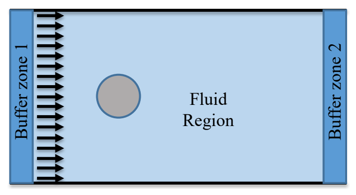
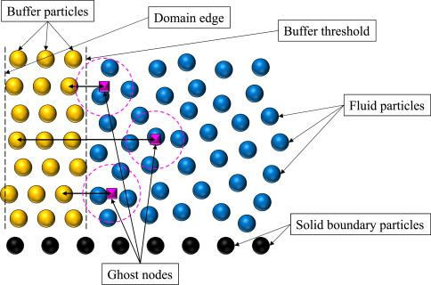
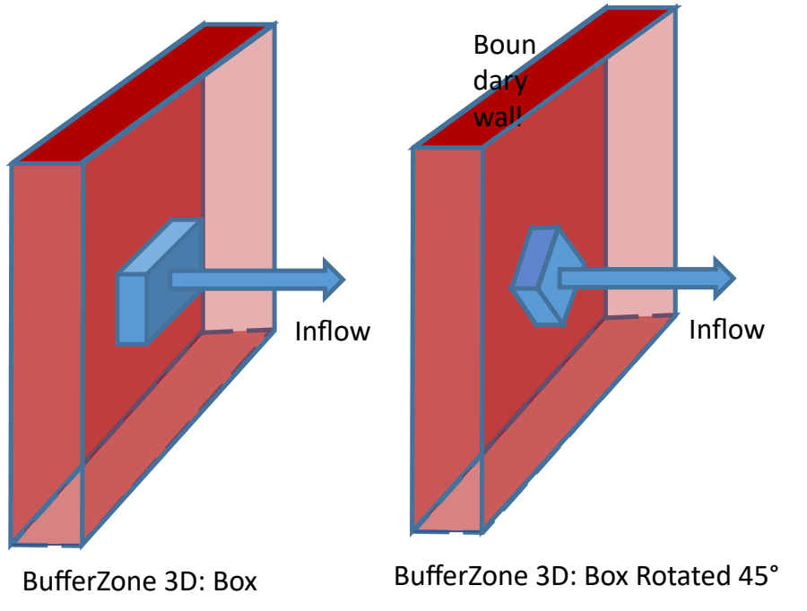
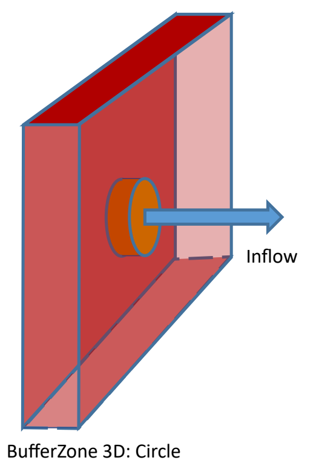
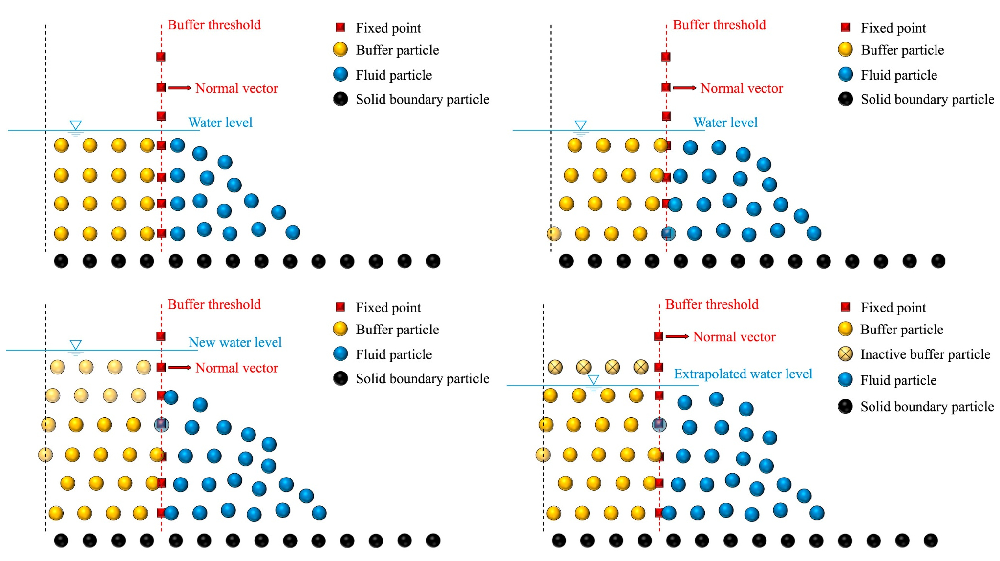
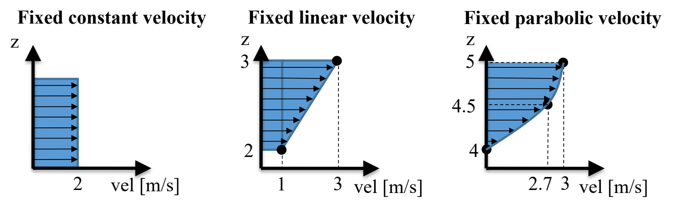
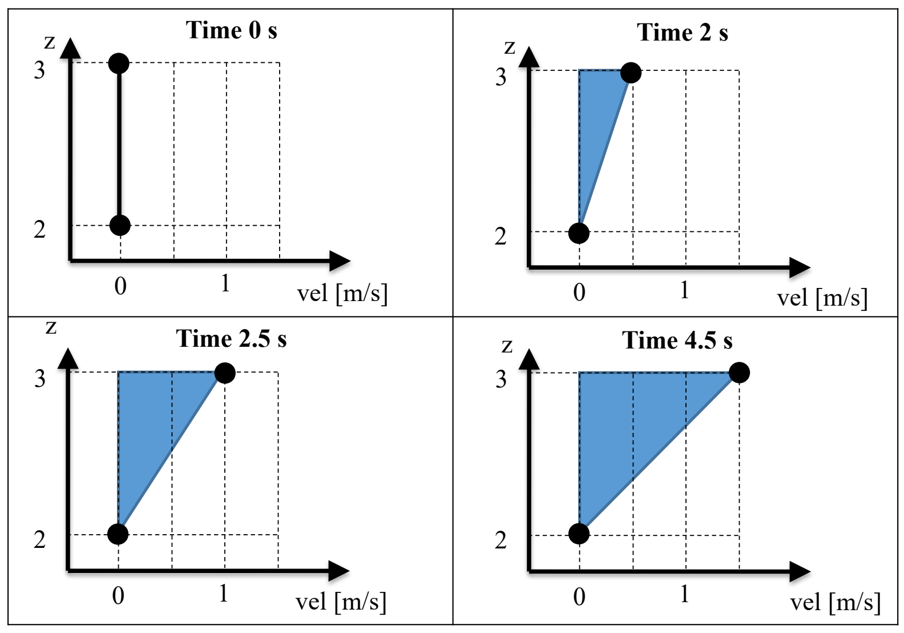
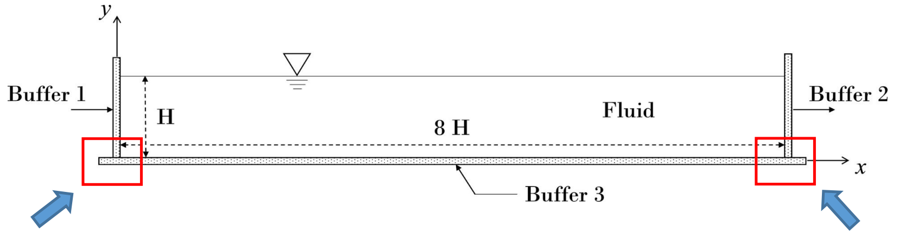

Inlet/Outlet boundary conditions¶
Under review by Angelo Tafuni and Corrado Altomare
Open-boundary zones, imposed and reconstructed flow variables, free-surface treatment and external mesh data in DualSPHysics v6.
Open boundaries and the buffer-zone method¶
Inlet/Outlet conditions allow fluid to cross an open boundary without representing that boundary as an impermeable wall. Buffer particles occupy layers outside the main fluid region. They provide neighbouring particles near the domain edge, where simply truncating the fluid distribution would leave incomplete kernel support. The algorithm creates, converts or removes particles as flow passes through the interface and as the buffer is refilled.
The same geometrical zone can act as an inlet, an outlet or both at different times. Its behaviour follows the velocity and particle-treatment configuration; the XML does not assign an immutable inlet/outlet role from the zone's name. Velocity and density can be prescribed or reconstructed from the fluid. Free-surface elevation is configured separately and can be imposed, read from external data or calculated from the adjacent fluid.
These open-boundary conditions are separate from the DBC or mDBC treatment of closed solid boundaries. A case can need both, for example an inflow/outflow channel with solid walls and a cylinder.

XML hierarchy and zone identification¶
The configuration belongs under case/execution/special/inout. Shared controls are children of inout, followed by one or more inoutzone elements. Each zone contains its particle-treatment controls, one geometry definition and its physical-variable conditions. Active zones receive internal identifiers in definition order; a mkfluid used to construct a zone is a seed-particle marker, not that internal zone identifier.
| XML location | Purpose |
|---|---|
casedef/geometry/commands/mainlist |
Create fluid and any special seed-particle sets |
execution/special/inout |
Shared allocation, search, extrapolation and refilling controls |
inout/inoutzone |
refilling, inputtreatment and layers |
inoutzone/zone2d or inoutzone/zone3d |
Interface geometry and inward direction |
inoutzone/imposevelocity |
Fixed, variable, extrapolated or interpolated velocity |
inoutzone/imposerhop |
Constant, hydrostatic or extrapolated density |
inoutzone/imposezsurf |
Fixed, variable or calculated surface elevation |
The snippets below retain the settings of their stated source. They are configuration fragments with the indicated parent, rather than pieces of a new combined case. Select one geometry and one applicable alternative for each physical variable. An underscore-prefixed alternative is inactive; do not remove its underscore without checking the intended configuration.
Shared controls and extrapolation¶
Allocation and spatial filtering¶
memoryresize controls extra particle-array capacity as particles are added. Its size0 and size factors concern allocation, not flow rates or the number of physical buffer layers. The current defaults are 2 and 4. useboxlimit confines the search for fluid entering buffer zones to their bounding boxes. Its optional freecentre locates a point inside the part of the main fluid domain excluded from that search; it must not lie inside a buffer zone. These controls should not be used to compensate for an incorrect interface or simulation domain.
XML excerpt — allocation. XML location: case/execution/special/inout. Source: examples/inletoutlet/01_FlowCylinder/CaseFlowCylinder_Re020_Def.xml. This selection requires its surrounding case or zone; it is not a complete simulation.
<memoryresize size0="2" size="4" comment="Initial memory resize (size0) and the following memory resizes according to initial inlet/outlet particles (default=2 and 4)" />
XML excerpt — spatial-filter. XML location: case/execution/special/inout. Source: doc/xml_format/_FmtXML_InOut.xml. This selection requires its surrounding case or zone; it is not a complete simulation.
<useboxlimit value="true" comment="In/out process is only applied to InOut zones delimited by BoxLimit (default=true)">
<freecentre x="2" y="0" z="0" comment="Centre of zone where InOut is not applied (default=centre of simulation domain)" units_comment="m" />
</useboxlimit>
Reconstruction order and arithmetic precision¶
Extrapolation places ghost nodes in the fluid and reconstructs a field and its first derivatives there. The corrected SPH approximation follows the Liu and Liu approach. In two dimensions, three unknowns are recovered: the field and its x and z derivatives. In three dimensions, the y derivative supplies a fourth unknown.
With \(g\) denoting a ghost node and \(j\) a neighbouring fluid particle, let \(V_j=m_j/\rho_j\), \(q_j=(1,x_j-x_g,z_j-z_g)\) in 2D, and add \(y_j-y_g\) in the corresponding 3D coordinate order. Define \(D_0W=W\) and \(D_\alpha W=\partial_\alpha W\). The correction system can be written as
In 2D, \(\mathbf c_g=(f_g,\partial_xf_g,\partial_zf_g)^T\); in 3D it contains all three spatial derivatives. Equivalently, Cramer's rule gives \(c_{g,\beta}=\det(\mathbf A_g^{(\beta)})/\det(\mathbf A_g)\), where the indicated column is replaced by \(\mathbf b_g\). This expresses the same field-and-gradient reconstruction as the expanded determinant formulation. The reconstructed value is extended back to a buffer particle \(o\) using
determlimit sets the determinant threshold for this correction. 1e-3 is the documented first-order selection; 1e+3 selects the more robust zeroth-order treatment used by the examples. If the determinant does not meet the threshold, the implementation uses the normalised kernel sum when its supporting sum is non-zero. The higher threshold is not an instruction to change the physical flow conditions.
XML excerpt — determinant-threshold. XML location: case/execution/special/inout. Source: examples/inletoutlet/01_FlowCylinder/CaseFlowCylinder_Re020_Def.xml. This selection requires its surrounding case or zone; it is not a complete simulation.
<determlimit value="1e+3" comment="Use 1e-3 for first_order or 1e+3 for zeroth_order (default=1e+3)" />
XML excerpt — extrapolation-precision. XML location: case/execution/special/inout. Source: doc/xml_format/_FmtXML_InOut.xml. This selection requires its surrounding case or zone; it is not a complete simulation.
<extrapolatemode value="1" comment="Calculation mode for rhop and velocity extrapolation from ghost nodes 1:fast-single, 2:single, 3:double (default=1)" />
extrapolatemode |
Arithmetic for velocity/density extrapolation |
|---|---|
1 |
Fast single precision on the GPU |
2 |
Regular single precision |
3 |
Double precision |
Precision and reconstruction order are independent choices. The current CPU path raises mode 1 to mode 2. Retain the example's settings unless a documented numerical reason justifies changing them; selecting double precision does not automatically enable a different extrapolation order. The correct element name is determlimit.

Defining and orienting a zone¶
Direction, interface and velocity sign¶
The direction vector points from the buffer towards the main fluid domain. The initial buffer layers extend in the opposite direction. Positive imposed scalar velocity follows that vector and introduces fluid; negative velocity removes fluid through the same geometrical zone. For example, a left interface usually has direction="right", whereas a right interface has direction="left". Positive velocity on both would produce two inlets, not an inlet and an outlet.
The geometry direction also determines the fluid side used for ghost reconstruction. It must not be reversed merely to change a positive inflow into an outflow. Arbitrary direction vectors are normalised, and rotations act on both the interface points and the direction. A zero direction is invalid.
Two-dimensional line geometry¶
A zone2d/line defines the innermost buffer line by point and point2 in the x–z plane. The following reference preserves the interface at x=-1.1 m, from z=0.1 m to z=1.0 m, with the fluid to its right.
XML excerpt — line-geometry. XML location: case/execution/special/inout/inoutzone. Source: doc/xml_format/_FmtXML_InOut.xml. This selection requires its surrounding case or zone; it is not a complete simulation.
<zone2d comment="Input zone for 2-D simulations">
<line>
<point x="-1.1" z="0.1" />
<point2 x="-1.1" z="1.0" />
<direction x="1" z="0" comment="Direction to input fluid (optional with 2-D line definition)" />
</line>
</zone2d>
rotate applies a rotation in the x–z plane. For line geometry, an omitted rotation centre is the first line point; for a particle-defined 2D zone it is the origin. State a centre explicitly when that distinction matters. The rotated reference below retains its own x=3 m interface, z coordinates and -30° angle; it is a separate geometric alternative.
XML excerpt — rotated-line. XML location: case/execution/special/inout/inoutzone. Source: doc/xml_format/_FmtXML_InOut.xml. This selection requires its surrounding case or zone; it is not a complete simulation.
<zone2d comment="Input zone for 2-D simulations">
<particles mkfluid="2" direction="custom">
<direction x="-1" z="0" comment="Direction definition for custom option only" />
<rotate angle="-30" centerx="0" centerz="0" anglesunits="degrees" />
<!-- A rotation is applied to inlet points and direction vector. -->
<!-- The center of rotation is (0,0) when centerx and centerz are not defined. -->
</particles>
</zone2d>
Seed-particle definitions¶
Instead of specifying a line or surface numerically, create a set of special fluid particles with GenCase and select that set through particles/@mkfluid. The seed set defines the innermost interface; it does not represent an already complete volume of buffer particles. The solver identifies these seed particles separately and creates the buffer layers from their positions.
Use only one seed mkfluid per zone, and do not reuse the same seed marker in several zones. The following two geometries belong to the cylinder case. The matching seed sets are created by its casedef/geometry drawing commands.
XML excerpt — left-seed-interface. XML location: case/execution/special/inout/inoutzone. Source: examples/inletoutlet/01_FlowCylinder/CaseFlowCylinder_Re020_Def.xml. This selection requires its surrounding case or zone; it is not a complete simulation.
<zone2d comment="Input zone for 2D simulations">
<particles mkfluid="1" direction="right" />
</zone2d>
XML excerpt — right-seed-interface. XML location: case/execution/special/inout/inoutzone. Source: examples/inletoutlet/01_FlowCylinder/CaseFlowCylinder_Re020_Def.xml. This selection requires its surrounding case or zone; it is not a complete simulation.
<zone2d comment="Input zone for 2-D simulations">
<particles mkfluid="2" direction="left" />
</zone2d>
| Named direction | Vector |
|---|---|
right, left |
+x, -x |
back, front |
+y, -y |
top, bottom |
+z, -z |
custom |
Explicit direction child |
A custom vector must be provided with direction="custom". Do not add a vector child to a named-axis direction. The seed points must form the line or plane appropriate to the selected geometry; an arbitrary cloud of particles does not define a valid interface.
XML excerpt — custom-seed-direction. XML location: case/execution/special/inout/inoutzone. Source: doc/xml_format/_FmtXML_InOut.xml. This selection requires its surrounding case or zone; it is not a complete simulation.
<zone2d comment="Input zone for 2-D simulations">
<particles mkfluid="2" direction="custom">
<direction x="-1" z="0" comment="Direction definition for custom option only" />
<rotate angle="-30" centerx="0" centerz="0" anglesunits="degrees" />
<!-- A rotation is applied to inlet points and direction vector. -->
<!-- The center of rotation is (0,0) when centerx and centerz are not defined. -->
</particles>
</zone2d>
Three-dimensional boxes, circles and rotation¶
Use zone3d for a 3D simulation. A box gives a planar rectangle through a point and its extent in two directions; the zero extent in the remaining direction identifies the interface plane. A circle gives its centre, radius and direction. The buffers are generated from these surfaces, rather than filling a closed solid box or sphere.
XML excerpt — rectangular-interface. XML location: case/execution/special/inout/inoutzone. Source: examples/inletoutlet/05_ShapesInlet3D/CaseShapesInlet3D_Def.xml. This selection requires its surrounding case or zone; it is not a complete simulation.
<zone3d comment="Input zone for 3-D simulations">
<box>
<point x="0.3" y="2.8" z="0.5" />
<size x="0.5" y="0" z="0.4" />
<direction x="0" y="-1" z="0" />
</box>
</zone3d>
XML excerpt — rotated-rectangular-interface. XML location: case/execution/special/inout/inoutzone. Source: examples/inletoutlet/05_ShapesInlet3D/CaseShapesInlet3D_Def.xml. This selection requires its surrounding case or zone; it is not a complete simulation.
<zone3d comment="Input zone for 3-D simulations">
<box>
<point x="1.2" y="2.8" z="0.5" />
<size x="0.4" y="0" z="0.4" />
<direction x="0" y="-1" z="0" />
<rotateaxis angle="-45" anglesunits="degrees">
<point1 x="1.4" y="0" z="0.7" />
<point2 x="1.4" y="1" z="0.7" />
</rotateaxis>
</box>
</zone3d>

XML excerpt — circular-interface. XML location: case/execution/special/inout/inoutzone. Source: examples/inletoutlet/05_ShapesInlet3D/CaseShapesInlet3D_Def.xml. This selection requires its surrounding case or zone; it is not a complete simulation.
<zone3d comment="Input zone for 3-D simulations">
<circle>
<point x="2.2" y="2.8" z="0.7" />
<radius v="0.2" />
<direction x="0" y="-1" z="0" />
</circle>
</zone3d>

rotateaxis uses two axis points and an angle. rotateadv uses a centre, three angles, an axis sequence and intrinsic/extrinsic selection. They are alternatives; their order and coordinate conventions must not be silently exchanged. The following reference uses the sequence ZYZ, intrinsic rotations and angles 45°, 30° and -10°.
XML excerpt — three-angle-rotation. XML location: case/execution/special/inout/inoutzone/zone3d/box. Source: doc/xml_format/_FmtXML_InOut.xml. This selection requires its surrounding case or zone; it is not a complete simulation.
<rotateadv angle1="45" angle2="30" angle3="-10" axes="ZYZ" intrinsic="true" anglesunits="degrees">
<center x="0.1" y="0.2" z="0" comment="It is optional (default=0,0,0)" />
</rotateadv>
The four-inlet box case demonstrates particle-defined 3D surfaces. Its four zones select seed markers 0, 1, 2 and 3, with directions right, back, left and front, respectively. Each has six layers, imposed velocity 2 m/s, refilling=0 and inputtreatment=2. Thus all four introduce fluid towards the domain; a negative sign has not been added to manufacture an outlet.
XML excerpt — four-inlet-zone. XML location: case/execution/special/inout. Source: examples/inletoutlet/06_Box4Inlet3D/CaseBox4Inlet3D_Def.xml. This selection requires its surrounding case or zone; it is not a complete simulation.
<inoutzone>
<refilling value="0" comment="Refilling mode. 0:Simple full, 1:Simple below zsurf, 2:Advanced for reverse flows (very slow) (default=1)" />
<inputtreatment value="2" comment="Treatment of fluid entering the zone. 0:No changes, 1:Convert fluid (necessary for outlet), 2:Remove fluid (recommended for inlet)" />
<layers value="6" comment="Number of inlet/outlet particle layers" />
<zone3d comment="Input zone for 3-D simulations">
<particles mkfluid="0" direction="right" />
</zone3d>
<imposevelocity mode="0" comment="Imposed velocity 0:fixed value, 1:variable value, 2:Extrapolated value (default=0)">
<velocity v="2" comment="Uniform velocity" units_comment="m/s" />
</imposevelocity>
</inoutzone>
Particle conversion and buffer refilling¶
refilling and inputtreatment control different operations. Refilling replaces or creates buffer particles; input treatment determines what happens when ordinary fluid particles enter the buffer. Specify both explicitly, along with layers.
refilling |
Method | Appropriate interpretation |
|---|---|---|
0 |
Simple-Full | Fill the complete buffer height; replace particles entering the fluid region |
1 |
Simple-Zsurf | Fill only below the selected surface; replacement is limited by that surface |
2 |
Advanced | Reconstruct missing buffer particles, supporting reverse flow and changing surface height |
Simple-Full can be used with imposed velocity and a variable free surface when particles above the surface are retained with zero imposed velocity. Simple-Zsurf does not create new rows simply because the surface rises. Gaps can develop with reverse flow or extrapolated velocity, so neither simple method should be substituted for Advanced in a reverse-flow configuration. Advanced refilling costs more work; the shared refillingrate controls how frequently its more expensive refill procedure is performed.
inputtreatment |
Action on fluid entering the buffer | Scope |
|---|---|---|
0 |
Leave it as ordinary fluid | Imposed inlet configurations only; unsuitable for outlet or reverse flow |
1 |
Convert it to buffer particles | Required for outlet and reverse flow |
2 |
Remove it from the simulation | Recommended for an imposed inlet; unsuitable for outlet or reverse flow |
The number of buffer layers must provide sufficient support near the interface. The teaching recommendation is at least five, with more for a larger h/dp ratio. Some package examples retain four layers; these values are documented as case settings, not changed to enforce a universal default. The reader accepts 1–250, but acceptance of an integer does not establish adequate kernel support.
The four panels show, in reading order: (a) the initial buffer-area flow configuration; (b) particle transition with unchanged water depth; (c) variable water depth imposed externally; and (d) variable water depth extrapolated from the fluid domain. The particle symbols, inactive-buffer legend, threshold, normals and water-level annotations retain their original meanings.

Conditional combinations¶
| Configuration | Required distinction |
|---|---|
| Reverse flow | Advanced refilling and conversion of entering fluid |
| Variable or calculated surface | Simple-Zsurf is rejected by the current reader |
| Variable/calculated surface with particle removal above it | Simple-Full is also rejected; use compatible Advanced refilling |
| Hydrostatic density | A defined surface condition is required |
| Extrapolated velocity | Usually an outlet choice; not recommended for inlet or reversing flow |
These conditions belong to the zone as a whole. Adding a free-surface block to an otherwise valid simple-refilling example can therefore make the combination invalid.
Prescribing and reconstructing velocity¶
Fixed profiles¶
imposevelocity mode="0" keeps the prescribed profile constant in time. velocity supplies one scalar value, velocity2 a linear profile through two (z, velocity) points, and velocity3 a parabolic profile through three points. The scalar is applied in the zone direction. These alternatives do not prescribe three Cartesian components through v, v2 and v3.

XML excerpt — uniform-velocity. XML location: case/execution/special/inout/inoutzone. Source: doc/xml_format/_FmtXML_InOut.xml. This selection requires its surrounding case or zone; it is not a complete simulation.
<imposevelocity mode="0" comment="Imposed velocity 0:fixed value, 1:variable value, 2:Extrapolated value (default=0)">
<velocity v="2" comment="Uniform velocity" units_comment="m/s" />
</imposevelocity>
XML excerpt — linear-velocity. XML location: case/execution/special/inout/inoutzone. Source: doc/xml_format/_FmtXML_InOut.xml. This selection requires its surrounding case or zone; it is not a complete simulation.
<imposevelocity mode="0" comment="Imposed velocity 0:fixed value, 1:variable value, 2:Extrapolated velocity, 3:Interpolated velocity (default=0)">
<velocity2 v="1" v2="3" z="2" z2="3" comment="Linear inlet velocity" units_comment="m/s" />
</imposevelocity>
XML excerpt — parabolic-velocity. XML location: case/execution/special/inout/inoutzone. Source: doc/xml_format/_FmtXML_InOut.xml. This selection requires its surrounding case or zone; it is not a complete simulation.
<imposevelocity mode="0" comment="Imposed velocity 0:fixed value, 1:variable value, 2:Extrapolated velocity, 3:Interpolated velocity (default=0)">
<velocity3 v="0" v2="0.608" v3="3" z="4" z2="4.5" z3="5" comment="Parabolic inlet velocity" units_comment="m/s" />
</imposevelocity>
The parabolic diagram illustrates a value of 2.7 m/s at z=4.5 m. The separate reference XML above instead specifies 0.608 m/s at that position, with 0 and 3 m/s at z=4 and 5 m. They are different example profiles. Preserve the values of the configuration being used; the diagram's intermediate value is not a replacement for v2 in the reference excerpt.
Time-dependent profiles and data files¶
Set mode="1" for a profile that changes with time. velocitytimes, velocitytimes2 and velocitytimes3 provide uniform, linear and parabolic profiles, respectively. Each timevalue supplies the time and the values defining that profile. The reader interpolates the profile data between supplied times; a time list should describe the intended transition, rather than being treated as a sequence of unrelated cases.

XML excerpt — time-dependent-linear-profile. XML location: case/execution/special/inout/inoutzone. This is the time-dependent linear-profile example; it requires a zone with compatible refilling and input treatment.
<imposevelocity mode="1" comment="Imposed velocity 1:variable value">
<velocitytimes2 comment="Linear inlet velocity in time">
<timevalue time="0.0" v="0" v2="0.0" z="2" z2="3" />
<timevalue time="2.0" v="0" v2="0.5" z="2" z2="3" />
<timevalue time="2.5" v="0" v2="1.0" z="2" z2="3" />
<timevalue time="4.5" v="1" v2="1.5" z="2" z2="3" />
</velocitytimes2>
</imposevelocity>
| Time (s) | Velocity at z=2 m (m/s) | Velocity at z=3 m (m/s) |
|---|---|---|
| 0 | 0 | 0 |
| 2 | 0 | 0.5 |
| 2.5 | 0 | 1.0 |
| 4.5 | 1 | 1.5 |
The table follows the XML values. In the diagram's final panel the lower endpoint remains at zero, whereas this XML specifies 1 m/s at z=2 m and t=4.5 s. Use the XML/table values when reproducing the numerical input. The complete format reference also contains a different linear-profile time history; it is retained as an alternative, not merged with this sequence.
External time-series alternatives use velocityfile, velocityfile2 or velocityfile3. The wave case below selects its existing uniform-velocity file. Preserve filename case on systems with case-sensitive paths, and supply the data file along with the XML.
XML excerpt — wave-velocity-file. XML location: case/execution/special/inout/inoutzone. Source: examples/inletoutlet/04_Waves2D/CaseWaves2D_Def.xml. This selection requires its surrounding case or zone; it is not a complete simulation.
<imposevelocity mode="1" comment="Imposed velocity 0:fixed value, 1:variable value, 2:Extrapolated value (default=0)">
<velocityfile file="waves.csv" comment="Uniform inlet velocity data (time;v)" />
</imposevelocity>
| File element | Column order stated by the reference |
|---|---|
velocityfile |
time;v |
velocityfile2 |
time;v;v2;z;z2 |
velocityfile3 |
time;v;v2;v3;z;z2;z3 |
Extrapolated velocity¶
mode="2" reconstructs velocity from the neighbouring fluid through ghost nodes. It does not require a prescribed profile. The cylinder outlet uses the following selection:
XML excerpt — extrapolated-outlet-velocity. XML location: case/execution/special/inout/inoutzone. Source: examples/inletoutlet/01_FlowCylinder/CaseFlowCylinder_Re020_Def.xml. This selection requires its surrounding case or zone; it is not a complete simulation.
<imposevelocity mode="2" comment="Imposed velocity 0:fixed value, 1:variable value, 2:Extrapolated value (default=0)" />
A spare velocity child in some older mode-2 examples does not make the mode prescribed. The selected mode determines the treatment. Use Advanced refilling and appropriate conversion if the physical flow can reverse; changing the scalar sign in an unrelated fixed-inlet snippet is not equivalent to extrapolated outflow.
Velocity from external mesh data¶
mode="3" supports interpolation from a sampled external field. The meshdata route uses CSV or binary mesh-data files. It is different from extrapolation: its values come from a supplied dataset, rather than the current adjacent SPH fluid. A mesh gauge can record a field in a donor calculation for reuse at a receiver boundary. The donor and receiver require consistent coordinates, units, sampled variables and time coverage.
XML excerpt — mesh-velocity. XML location: case/execution/special/inout/inoutzone. Source: examples/inletmesh/01_Basic/CaseJet3dMeshVel1_Def.xml. This selection requires its surrounding case or zone; it is not a complete simulation.
<imposevelocity mode="3" comment="Imposed velocity 0:fixed value, 1:variable value, 2:Extrapolated velocity, 3:Interpolated velocity (default=0)">
<meshdata file="CaseJet3dMesh_DataVel1.csv" comment="Velocity data (magnitude or 3 components) from mesh-data CSV file.">
<magnitude v="true" comment="Velocity data using magnitude or 3 components (default=true)" />
<initialtime v="0" comment="Defines the initial time of mesh data (default=0)" />
<setpos x="0" y="0" z="0" comment="Applies a position offset to the mesh data (default=0,0,0)" />
</meshdata>
</imposevelocity>
meshdata child |
Role |
|---|---|
magnitude/@v |
Use the sampled magnitude along the inlet direction, or the available velocity components |
reverse/@v |
Reverse the input velocity values |
initialtime/@v |
Offset the input-data time origin |
timeloop/@tbegin, @tend |
Request a loop interval; check the interpolation route's restrictions |
setpos |
Offset the sampled grid position |
setvelmul, setveladd |
Apply component-wise multiplication and addition to velocity data |
Choose either the current child-element configuration or a compatible legacy attribute alternative; do not activate several unrelated meshdata alternatives together. The complete mesh reference below retains both for reference. The older gridveldata route is a separate input format. Its supported controls and dimensional restrictions differ from meshdata; do not substitute one filename format for the other. The current legacy-grid reader accepts gridposzero; a gridresetvelz child shown in the older main reference is not part of its current accepted element list.
For the production side, the following current gauge reference defines a mesh able to output velocity, density, pressure and elevation. It belongs under execution/special/gauges, not inside an inlet zone. Its coordinates and sampling intervals remain reference settings to adapt deliberately to a donor case.
XML excerpt — donor-mesh-gauge. XML location: case/execution/special/gauges. Source: doc/xml_format/_FmtXML_Gauges.xml. This selection requires its surrounding case or zone; it is not a complete simulation.
<mesh name="VelZsurf">
<point x="0.2" y="0" z="0" comment="Initial measurement position" units_comment="m" />
<vec1 x="0" y="1" z="0" comment="First axis vector to define the measurement grid (use 0,0,0 to ignore)" />
<vec2 x="1" y="0" z="0" comment="Second axis vector to define the measurement grid (use 0,0,0 to ignore)" />
<vec3 x="0" y="0" z="1" comment="Third axis vector to define the measurement grid (required for elevation calculation)" />
<size1 length="0.2" distpt="#Dp*4" comment="Length and distance between measurement points for first direction" units_comment="m" />
<size2 length="0.1" distpt="#Dp*2" comment="Length and distance between measurement points for second direction" units_comment="m" />
<size3 length="0.3" distpt="#Dp*2" comment="Length and distance between measurement points for third direction" units_comment="m" />
<dirdat x="1" y="0" z="0" comment="Direction vector for computed linear velocity or other variables" />
<masslimit coef="0.45" comment="Coefficient to calculate mass of free-surface (default=0.5 on 3D and 0.4 on 2D)" />
<outputdata value="vel,veldir,rho,press,zsurf" comment="Type of results requested (vel, veldir, rho, press, zsurf)" />
<outputfmt value="bin,csv" comment="Output formats (bin, csv) (default=csv)" />
<output value="true" comment="Creates CSV and binary files of measurements (default=false)" />
<buffersize value="30" comment="Output buffer size (default=30)" />
<kclimit value="0.2" comment="Minimum value of sum_wab_vol to apply the Kernel Correction. Use NONE to disable (default=0.5)" />
<kcdummy value="0" comment="Dummy value for non-corrected values. Use NONE to disable (default=0)" />
<kcdummyvtk value="false" comment="Includes dummy points in VTK files (default=true)" />
</mesh>
The receiver does not generate a missing donor file. Its meshdata filename must match a compatible output file actually supplied by the donor workflow. examples/inletmesh/03_Dambreak/CaseDamOpen2d_MakeData_Def.xml illustrates the donor stage; its receiver cases supply the separate inlet configuration. This documentation does not require running that stage merely to read the guide.
Flow-rate input and circular jets¶
flowvelocity interprets the scalar velocity data as a volumetric flow rate. It is supported with uniform fixed or time-dependent input when surface elevation is fixed or undefined. It is not a substitute for arbitrary spatial profiles or a variable free-surface definition. The conversion uses the active interface points and the configured particle-volume ratio; the ratio is not another flow-rate value.
XML excerpt — volumetric-flow-input. XML location: case/execution/special/inout/inoutzone. Source: doc/xml_format/_FmtXML_InOut.xml. This selection requires its surrounding case or zone; it is not a complete simulation.
<imposevelocity mode="0" comment="Imposed velocity 0:fixed value, 1:variable value, 2:Extrapolated velocity, 3:Interpolated velocity (default=0)">
<flowvelocity active="true" units="l/s" ratio="1.0" comment="Velocity values are read as flow (units=l/s, gal/s or gal/min) and ratio is used to compute particle volume (ratio*dp^3)." />
<velocity v="2" comment="Uniform velocity" units_comment="l/s" />
</imposevelocity>
The supported unit strings are l/s, gal/s and gal/min. Here the original value 2 means 2 l/s, because the flowvelocity switch is active. Without that switch, a velocity/@v value normally means m/s. For geometrical interpretation, volumetric rate and mean normal speed satisfy \(Q=A U_n\); the discrete conversion follows the active particle representation, rather than an arbitrary area supplied independently of the zone.
For a circular zone3d/circle, jetcircle defines a fixed incoming jet with a velocity, an opening radius and a distance at which that radius is specified. It is supported for positive inflow with constant density and a fixed or undefined surface condition.
XML excerpt — circular-jet. XML location: case/execution/special/inout/inoutzone. Source: doc/xml_format/_FmtXML_InOut.xml. This selection requires its surrounding case or zone; it is not a complete simulation.
<imposevelocity mode="0" comment="Imposed velocity 0:fixed value, 1:variable value, 2:Extrapolated velocity, 3:Interpolated velocity (default=0)">
<jetcircle v="2" distance="0.010" radius="0.02" comment="Velocity for circular jet (velocity, distance and opening radius)" units_comment="m/s" />
</imposevelocity>
The reference values are 2 m/s, distance 0.010 m and radius 0.02 m. The radius belongs to the downstream opening definition, while the circle geometry separately defines the interface radius. Do not reinterpret these two radii as the same parameter.
Density and hydrostatic pressure¶
imposerhop selects the density treatment independently of the velocity mode. It supplies density, not an arbitrary imposed pressure history. Hydrostatic pressure follows the case's density/pressure relationship and surface elevation.
imposerhop/@mode |
Treatment |
|---|---|
0 |
Set buffer density to the case reference density |
1 |
Compute density for the hydrostatic water column |
2 |
Extrapolate density from fluid ghost nodes |
XML excerpt — hydrostatic-density. XML location: case/execution/special/inout/inoutzone. Source: examples/inletoutlet/04_Waves2D/CaseWaves2D_Def.xml. This selection requires its surrounding case or zone; it is not a complete simulation.
<imposerhop mode="1" comment="Outlet rhop 0:Imposed fixed value, 1:Hydrostatic, 2:Extrapolated from ghost nodes (default=0)" />
For the hydrostatic option, with \(B\) and \(\gamma\) from the case equation of state, the implementation evaluates the water-column density and prevents it falling below the reference value:
Supply a compatible surface definition for this option. The current reader obtains the bottom from the zone geometry; an old zbottom child is ignored in fixed or variable surface modes. It must not be described as an effective v6 hydrostatic control. Gravity used by the Inlet/Outlet hydrostatic and water-elevation treatment is the z component; a general rotated-gravity hydrostatic condition must not be assumed.
Free-surface elevation and particle removal¶
Surface elevation is a z coordinate, not a velocity or a water-depth increment. imposezsurf is separate from both imposerhop and imposevelocity. The standard uniform setting supplies one elevation for the zone; a spatial mesh can supply a non-uniform elevation where supported.
Fixed elevation¶
mode="0" uses an explicitly supplied zsurf. Omission of the whole imposezsurf block means no defined surface condition; it must not be confused with an automatically supplied fixed level when hydrostatic density requires one.
XML excerpt — fixed-surface. XML location: case/execution/special/inout/inoutzone. Source: doc/xml_format/_FmtXML_InOut.xml. This selection requires its surrounding case or zone; it is not a complete simulation.
<imposezsurf mode="0" comment="Inlet Z-surface 0:Imposed fixed value, 1:Imposed variable value, 2:Calculated from fluid domain (default=0)">
<zsurf value="1" comment="Characteristic inlet Z-surface (used for Hydrostatic option)" units_comment="m" />
<remove value="false" comment="Removes particles above the Zsurf limit (default=false)" />
</imposezsurf>
Time series and external surface files¶
mode="1" reads a time-dependent elevation from zsurftimes or zsurffile. These are alternatives. The following time history retains the official reference's values and times, including 2.2 and 5.5 s; they differ from the separate teaching illustration's 2 and 5 s transitions.
XML excerpt — surface-time-series. XML location: case/execution/special/inout/inoutzone. Source: doc/xml_format/_FmtXML_InOut.xml. This selection requires its surrounding case or zone; it is not a complete simulation.
<imposezsurf mode="1" comment="Inlet Z-surface 0:Imposed fixed value, 1:Imposed variable value, 2:Calculated from fluid domain (default=0)">
<savevtk value="true" comment="Creates VTK files with Zsurf for each PART (default=false)" />
<remove value="true" comment="Removes particles above the Zsurf limit (default=false)" />
<zsurftimes comment="Characteristic inlet Z-Surf changes in time" units_comment="m">
<timevalue time="0.0" zsurf="1" />
<timevalue time="1.0" zsurf="1" />
<timevalue time="2.2" zsurf="0.4" />
<timevalue time="3.0" zsurf="0.4" />
<timevalue time="5.5" zsurf="2" />
<timevalue time="7.0" zsurf="0.4" />
</zsurftimes>
</imposezsurf>
| Time (s) | Reference elevation (m) |
|---|---|
| 0 | 1 |
| 1 | 1 |
| 2.2 | 0.4 |
| 3 | 0.4 |
| 5.5 | 2 |
| 7 | 0.4 |
The teaching sequence has the same elevations at times 0, 1, 2, 3, 5 and 7 s. It is a separate input history; do not silently replace 2.2/5.5 with 2/5 in an existing configuration. Time interpolation determines the changes between the selected samples.
For a separate surface file, the stated data order is time;zsurf. The standalone alternative below uses the correct matching closing element for imposezsurf.
XML excerpt — surface-file. XML location: case/execution/special/inout/inoutzone. Source: doc/xml_format/_FmtXML_InOut.xml. This selection requires its surrounding case or zone; it is not a complete simulation.
<imposezsurf mode="1" comment="Inlet Z-surface 0:Imposed fixed value, 1:Imposed variable value, 2:Calculated from fluid domain (default=0)">
<savevtk value="true" comment="Creates VTK files with Zsurf for each PART (default=false)" />
<remove value="false" comment="Removes particles above the Zsurf limit (default=false)" />
<zsurffile file="FileZsurf.csv" comment="Zsurf data (time;zsurf)"/>
</imposezsurf>
remove=true excludes buffer particles above the current surface limit; remove=false retains them. It does not set the surface value itself. When imposed velocity is used with Simple-Full refilling, retained particles above the surface have zero imposed velocity. To remove particles with a variable or calculated elevation, use a compatible Advanced-refilling configuration. savevtk=true requests surface output for the variable/calculated modes; it is a diagnostic output switch, not another elevation method.
Surface elevation from mesh data¶
A mesh-data surface uses mode="1", because it is a supplied field. The following example reads an elevation dataset rather than a velocity dataset. Matching its spatial coordinates and time coverage is as important as selecting the file extension.
XML excerpt — mesh-surface. XML location: case/execution/special/inout/inoutzone. Source: examples/inletmesh/01_Basic/CaseJet3dMeshZsurf_Def.xml. This selection requires its surrounding case or zone; it is not a complete simulation.
<imposezsurf mode="1" comment="Inlet Z-surface 0:Imposed fixed value, 1:Imposed variable value, 2:Calculated from fluid domain (default=0)">
<savevtk value="true" comment="Creates VTK files with Zsurf for each PART (default=false)" />
<meshdata file="CaseJet3dMesh_DataZsurf.csv" comment="Zsurf data from mesh-data file." units_comment="m" />
</imposezsurf>
The mesh reference also permits initialtime, timeloop and setpos children for the surface data. The current reader does not support requested time looping for its bilinear/trilinear surface-interpolation route. A uniform time series and a spatially varying mesh therefore cannot be assumed to support identical looping options.
Elevation calculated from the fluid¶
mode="2" calculates the surface in front of the buffer using the fluid distribution and the gauge machinery. It is not the same algorithm as extrapolating density or velocity through a correction matrix. zsurf0 supplies its initial level, zsurfmin restricts the search from below, and zsurffit reduces the calculated level by a specified distance or a multiple of dp.
XML excerpt — calculated-surface. XML location: case/execution/special/inout/inoutzone. Source: doc/xml_format/_FmtXML_InOut.xml. This selection requires its surrounding case or zone; it is not a complete simulation.
<imposezsurf mode="2" comment="Inlet Z-surface 0:Imposed fixed value, 1:Imposed variable value, 2:Calculated from fluid domain (default=0)">
<savevtk value="true" comment="Creates VTK files with Zsurf for each PART (default=false)" />
<remove value="false" comment="Removes particles above the Zsurf limit (default=false)" />
<zsurf0 value="1.0" comment="Initial Z-surface value" units_comment="m" />
<zsurfmin value="0.8" comment="Minimum Z-surface to reduce the calculation area (default=minimun Z inlet)" units_comment="m" />
<zsurffit valuedp="0.5" comment="Reduction of calculated zsurf with explicit value (value) or according to dp (valuedp) (default vdp=0.5)" units_comment="m" />
</imposezsurf>
| Calculated-surface setting | Meaning |
|---|---|
zsurf0/@value |
Required initial elevation |
zsurfmin/@value |
Minimum search elevation, no lower than the zone minimum |
zsurffit/@value |
Explicit reduction of the computed elevation, in metres |
zsurffit/@valuedp |
Reduction expressed in particle spacings; alternative to value |
The reference uses valuedp=0.5, corresponding to a reduction of half a particle spacing. The current reader defaults to that half-spacing reduction. Its valuedp spelling must not be replaced by vdp merely because an old comment abbreviates it that way.
Practical configurations and interactions¶
Cylinder inflow and outflow¶
examples/inletoutlet/01_FlowCylinder/CaseFlowCylinder_Re020_Def.xml uses an imposed 1 m/s inlet on marker 1 and an extrapolated outlet on marker 2. Both retain four layers and Simple-Full refilling; the inlet removes entering fluid and the outlet converts it. The case's boundary method is mDBC with SlipMode=NS and NoPenetration=N; it retains its own viscosity, shifting and motion settings. The presence of old creation metadata in a case header does not replace the actual execution parameters.
Reversing flow and waves¶
examples/inletoutlet/03_ReverseFlow/CaseReverseFlow_Def.xml uses Advanced refilling, conversion and five layers. Its left-zone velocity changes through the samples below. The calculated surface and removal setting are part of the complete case, not a simple-refilling alternative.
| Time (s) | Left-zone imposed velocity (m/s) |
|---|---|
| 0 | 1 |
| 8 | 0 |
| 9 | -1 |
| 15 | 0 |
| 15.5 | 1 |
| 20.5 | 1 |
examples/inletoutlet/04_Waves2D/CaseWaves2D_Def.xml uses eight layers, an external velocity file, hydrostatic density, calculated elevation with initial level 0.27 m, and removal above that elevation. Preserve the input file and the zone's Advanced-refilling/conversion controls when examining this configuration. The inlet file is not an arbitrary substitute for a piston-motion file.
Junctions with solid walls and mDBC¶
The documented teaching examples identify the junctions between open buffers and DBC walls as locations where instabilities can occur. They discuss applying mDBC to the relevant wall portions or to the complete closed boundary. Such a choice still requires correct solid-boundary normals and compatible slip settings; it is not achieved by adding a second inlet zone at the wall.

See the mDBC XML Guide for fluid-facing normals, surface offsets, layers, slip modes and mixed solid-boundary treatments. Applying mDBC only to a selected solid region requires the corresponding boundary configuration; do not infer a new per-zone solid-boundary selector inside inoutzone.
Shifting, periodicity and resolution domains¶
The teaching material describes local shifting as an aid to maintaining particle coverage with quickly changing surface height. It complements a suitable refill strategy rather than replacing it. Preserve the complete case's shifting settings and any local shifting region; do not add the advanced-shifting formulation as an undocumented requirement.
The single-domain inlet/outlet implementation handles periodic particle copies, and the cylinder case retains its explicit periodic execution entry. This does not establish that every combination of periodic direction, rotated buffer and solver backend is appropriate. Check the geometry and full configuration of the corresponding case. In particular, periodic and open boundaries describe different domain operations and must not be conflated.
The variable-resolution example examples/vresolution/06_Special/CaseTurekHronFSI2VRes_Def.xml conditionally activates inout with active="#VResId==0". This is a domain-specific configuration, not permission to duplicate the same zone indiscriminately into every resolution domain. Resolution buffers and open-boundary buffers have different roles. Retain the complete example when using that combination.
The current single-domain CPU and GPU initialisation paths reject solver restarts when Inlet/Outlet is active. A donor-field initialisation workflow is therefore distinct from a solver restart. No claim of current multi-GPU Inlet/Outlet compatibility follows from these single-domain examples.
Geometry checks and diagnostic output¶
Keep the complete buffer extent inside the simulation domain and check that seed points lie on the intended line or plane. Refilling cannot fix a buffer truncated by domain limits. Avoid overlap with unrelated fluid or boundary particles at initialisation; the proximity checks can exclude nearby fluid or reject conflicting boundary/inlet particles.
| Output or observation | Interpretation |
|---|---|
CfgInOut_DomainReal.vtk |
Actual zone geometry |
CfgInOut_DomainBox.vtk |
Zone bounding boxes used in searches |
CfgInOut_ErrorParticles.vtk |
Conflicting particles identified by proximity checks |
CfgInOut_ExcludedParticles.vtk |
Initial fluid excluded near buffer particles |
Surface VTK requested by savevtk |
Evolving surface representation for supported surface modes |
| Gaps during reversal | Review Advanced refilling, conversion and available support |
| Unexpected direction of flow | Review the zone vector and the sign of the imposed scalar separately |
| Unexpected water column | Review surface mode, required initial/explicit elevation and density mode |
Inspect the initial geometry and direction before interpreting a flow result. An XML parse does not establish correct physical behaviour, and a supplied data filename does not establish that the dataset covers the requested region or duration.
For available configurations and variants, see the Inlet/Outlet Examples Catalogue and the InletMesh catalogue.
Full Inlet/Outlet XML format reference¶
The following complete supplied reference files document the structure and its alternatives. They are collections of XML examples and explanatory separators, not standalone executable cases. Their original version headers, comments, values and alternatives are retained. Choose one applicable alternative when configuring a case, using the current syntax explained above.
The main reference's zsurffile alternative has a mismatched closing imposevelocity tag; the standalone surface-file excerpt above shows the matching imposezsurf closure. Its old gridresetvelz alternative is also outside the current legacy-grid reader's accepted list. Those original lines remain in the verbatim reference below and should not be copied as a complete current configuration.
Main Inlet/Outlet structure and alternatives¶
Source: doc/xml_format/_FmtXML_InOut.xml.
<?xml version="1.0" encoding="UTF-8" ?>
<!-- *** DualSPHysics v5.4.326 (18-05-2024) *** -->
<!-- *** class: JSphInOut *** -->
<!------------------------------------------------------------------------------->
<!------------------------------------------------------------------------------->
<!-- *** Example simple and complete for 2D *** -->
<special>
<inout>
<memoryresize size0="2" size="4" comment="Initial memory resize (size0) and the following memory resizes according to initial inlet/outlet particles (default=2 and 4)"/>
<useboxlimit value="true" comment="In/out process is only applied to InOut zones delimited by BoxLimit (default=true)">
<freecentre x="2" y="0" z="0" comment="Centre of zone where InOut is not applied (default=centre of simulation domain)" units_comment="m" />
</useboxlimit>
<determlimit value="1e+3" comment="Use 1e-3 for first_order or 1e+3 for zeroth_order (default=1e+3)" />
<extrapolatemode value="1" comment="Calculation mode for rhop and velocity extrapolation from ghost nodes 1:fast-single, 2:single, 3:double (default=1)" />
<refillingrate value="10" comment="Advanced refilling rate to increase performance (default=10)" />
<inoutzone>
<refilling value="0" comment="Refilling mode. 0:Simple full, 1:Simple below zsurf, 2:Advanced for reverse flows (very slow) (default=1)" />
<inputtreatment value="0" comment="Treatment of fluid entering the zone. 0:No changes, 1:Convert fluid (necessary for outlet), 2:Remove fluid (recommended for inlet)" />
<layers value="6" comment="Number of inlet/outlet particle layers" />
<zone2d comment="Input zone for 2-D simulations">
<line>
<point x="-1.1" z="0.1" />
<point2 x="-1.1" z="1.0" />
<direction x="1" z="0" comment="Direction to input fluid (optional with 2-D line definition)" />
</line>
</zone2d>
<imposevelocity mode="0" comment="Imposed velocity 0:fixed value, 1:variable value, 2:Extrapolated value (default=0)">
<velocity v="2" comment="Uniform velocity" units_comment="m/s" />
</imposevelocity>
<imposerhop mode="2" comment="Outlet rhop 0:Imposed fixed value, 1:Hydrostatic, 2:Extrapolated from ghost nodes (default=0)"/>
</inoutzone>
<inoutzone>
<refilling value="1" comment="Refilling mode. 0:Simple full, 1:Simple below zsurf, 2:Advanced for reverse flows (very slow) (default=1)" />
<inputtreatment value="1" comment="Treatment of fluid entering the zone. 0:No changes, 1:Convert fluid (necessary for outlet), 2:Remove fluid (recommended for inlet)" />
<layers value="8" comment="Number of inlet/outlet particle layers" />
<zone2d comment="Input zone for 2-D simulations">
<line>
<point x="3.1" z="0.1" />
<point2 x="3.1" z="1.0" />
<direction x="-1" z="0" comment="Direction to input fluid (optional with 2-D line definition)" />
</line>
</zone2d>
<imposevelocity mode="0" comment="Imposed velocity 0:fixed value, 1:variable value, 2:Extrapolated value (default=0)">
<velocity v="-2" comment="Uniform velocity" units_comment="m/s" />
</imposevelocity>
<imposerhop mode="2" comment="Outlet rhop 0:Imposed fixed value, 1:Hydrostatic, 2:Extrapolated from ghost nodes (default=0)"/>
</inoutzone>
</inout>
</special>
<!------------------------------------------------------------------------------->
<!------------------------------------------------------------------------------->
<!-- *** Point definitions for 2D starting from special fluid particles *** -->
<geometry>
...
<commands>
<mainlist>
<setmkfluid mk="0" />
<drawbox>
<boxfill>solid</boxfill>
<point x="-1" y="-1" z="0" />
<size x="4" y="2" z="1" />
</drawbox>
<setmkfluid mk="1" />
<drawbox>
<boxfill>left</boxfill>
<point x="-1" y="-1" z="0" />
<size x="4" y="2" z="1" />
</drawbox>
<setmkfluid mk="2" />
<drawbox>
<boxfill>right</boxfill>
<point x="-1" y="-1" z="0" />
<size x="4" y="2" z="1" />
</drawbox>
<setmkfluid mk="3" />
<drawbox>
<boxfill>right</boxfill>
<point x="-1" y="-1" z="0" />
<size x="4" y="2" z="1" />
</drawbox>
<setmkbound mk="0" />
<drawline>
<point x="-1.5" y="0" z="0" />
<point x="3.8" y="0" z="0" />
</drawline>
</mainlist>
</commands>
</geometry>
...
<special>
<inout resizetime="0.5">
<inoutzone>
<zone2d comment="Input zone for 2-D simulations">
<particles mkfluid="1" direction="right" />
<!-- *** Direction values: left, right, front, back, top, bottom, custom *** -->
</zone2d>
</inoutzone>
<inoutzone>
<zone2d comment="Input zone for 2-D simulations">
<particles mkfluid="2" direction="custom">
<direction x="-1" z="0" comment="Direction definition for custom option only" />
<rotate angle="-30" centerx="0" centerz="0" anglesunits="degrees" />
<!-- A rotation is applied to inlet points and direction vector. -->
<!-- The center of rotation is (0,0) when centerx and centerz are not defined. -->
</particles>
</zone2d>
</inoutzone>
</inout>
</special>
<!------------------------------------------------------------------------------->
<!------------------------------------------------------------------------------->
<!-- *** Point definitions for 3D starting from special fluid particles *** -->
<geometry>
...
<commands>
<mainlist>
<setmkfluid mk="0" />
<drawbox>
<boxfill>solid</boxfill>
<point x="-1" y="-1" z="0" />
<size x="4" y="2" z="1" />
</drawbox>
<setmkfluid mk="1" />
<drawbox>
<boxfill>left</boxfill>
<point x="-1" y="-1" z="0" />
<size x="4" y="2" z="1" />
</drawbox>
<setmkfluid mk="2" />
<drawbox>
<boxfill>right</boxfill>
<point x="-1" y="-1" z="0" />
<size x="4" y="2" z="1" />
</drawbox>
<setmkbound mk="0" />
<drawbox>
<boxfill>bottom</boxfill>
<point x="-1.5" y="-1" z="0" />
<size x="5.3" y="2" z="0" />
</drawbox>
</mainlist>
</commands>
</geometry>
...
<special>
<inout resizetime="0.5">
<inoutzone>
<zone3d comment="Input zone for 3-D simulations">
<particles mkfluid="1" direction="right">
<!-- *** Direction values: left, right, front, back, top, bottom, custom *** -->
</particles>
</zone3d>
</inoutzone>
<inoutzone>
<zone3d comment="Input zone for 3-D simulations">
<particles mkfluid="2" direction="custom">
<direction x="-1" y="0.1" z="0" comment="Direction definition for custom option only" />
</particles>
</zone3d>
</inoutzone>
<inoutzone>
<zone3d comment="Input zone for 3-D simulations">
<particles mkfluid="2" direction="custom">
<direction x="-1" y="0" z="0" comment="Direction definition for custom option only" />
<rotateaxis angle="-45" anglesunits="degrees">
<point1 x="1.4" y="0" z="0.7" />
<point2 x="1.4" y="1" z="0.7" />
</rotateaxis>
</particles>
</zone3d>
</inoutzone>
<inoutzone>
<zone3d comment="Input zone for 3-D simulations">
<particles mkfluid="2" direction="custom">
<direction x="-1" y="0" z="0" comment="Direction definition for custom option only" />
<rotateadv angle1="45" angle2="30" angle3="-10" axes="ZYZ" intrinsic="true" anglesunits="degrees">
<center x="0.1" y="0.2" z="0" comment="It is optional (default=0,0,0)" />
</rotateadv>
</particles>
</zone3d>
</inoutzone>
</inout>
</special>
<!------------------------------------------------------------------------------->
<!------------------------------------------------------------------------------->
<!-- *** Point definitions for 2D *** -->
<special>
<inout resizetime="0.5">
<useboxlimit value="true" comment="In/out process is only applied to InOut zones delimited by BoxLimit (default=true)"/>
<determlimit value="1e+3" comment="Use 1e-3 for first_order or 1e+3 for zeroth_order (default=1e+3)" />
<extrapolatemode value="1" comment="Calculation mode for rhop and velocity extrapolation from ghost nodes 1:fast-single, 2:single, 3:double (default=1)" />
<inoutzone>
<zone2d comment="Input zone for 2-D simulations">
<line>
<point x="3" z="1.3" />
<point2 x="3" z="2" />
<direction x="-1" z="0" comment="Direction to input fluid (optional with 2-D line definition)" />
<rotate angle="-30" centerx="0" centerz="0" anglesunits="degrees" />
<!-- A rotation is applied to line points and direction vector. -->
<!-- The center of rotation is the first line point when centerx and centerz are not defined. -->
</line>
</zone2d>
</inoutzone>
<inoutzone>
<zone2d comment="Input zone for 2-D simulations">
<line>
<point x="-3.5" z="0.8" />
<point2 x="-3.5" z="2.4" />
<direction x="1" z="0" comment="Direction to input fluid (optional with 2-D line definition)" />
</line>
</zone2d>
</inoutzone>
</inout>
</special>
<!------------------------------------------------------------------------------->
<!------------------------------------------------------------------------------->
<!-- *** Point definitions for 3D *** -->
<special>
<inout resizetime="0.5">
<useboxlimit value="true" comment="In/out process is only applied to InOut zones delimited by BoxLimit (default=true)"/>
<determlimit value="1e+3" comment="Use 1e-3 for first_order or 1e+3 for zeroth_order (default=1e+3)" />
<extrapolatemode value="1" comment="Calculation mode for rhop and velocity extrapolation from ghost nodes 1:fast-single, 2:single, 3:double (default=1)" />
<inoutzone>
<zone3d comment="Input zone for 3-D simulations">
<box>
<point x="0.3" y="2.8" z="0.5" />
<size x="0.5" y="0" z="0.4" />
<direction x="0" y="-1" z="0" />
</box>
</zone3d>
</inoutzone>
<inoutzone>
<zone3d comment="Input zone for 3-D simulations">
<box>
<point x="1.2" y="2.8" z="0.5" />
<size x="0.4" y="0" z="0.4" />
<direction x="0" y="-1" z="0" />
<rotateaxis angle="-45" anglesunits="degrees">
<point1 x="1.4" y="0" z="0.7" />
<point2 x="1.4" y="1" z="0.7" />
</rotateaxis>
</box>
</zone3d>
</inoutzone>
<inoutzone>
<zone3d comment="Input zone for 3-D simulations">
<box>
<point x="1.2" y="2.8" z="0.5" />
<size x="0.4" y="0" z="0.4" />
<direction x="0" y="-1" z="0" />
<rotateadv angle1="45" angle2="30" angle3="-10" axes="ZYZ" intrinsic="true" anglesunits="degrees">
<center x="0.1" y="0.2" z="0" comment="It is optional (default=0,0,0)" />
</rotateadv>
</box>
</zone3d>
</inoutzone>
<inoutzone>
<zone3d comment="Input zone for 3-D simulations">
<circle>
<point x="2.2" y="2.8" z="0.7" />
<radius v="0.2" />
<direction x="1" y="-1" z="0" />
</circle>
</zone3d>
<zone3d comment="Input zone for 3-D simulations">
<circle>
<point x="2.2" y="2.8" z="0.7" />
<radius v="0.2" />
<direction x="1" y="-1" z="0" />
<rotateaxis angle="-45" anglesunits="degrees">
<point1 x="1.4" y="0" z="0.7" />
<point2 x="1.4" y="1" z="0.7" />
</rotateaxis>
</circle>
</zone3d>
<zone3d comment="Input zone for 3-D simulations">
<circle>
<point x="2.2" y="2.8" z="0.7" />
<radius v="0.2" />
<direction x="1" y="-1" z="0" />
<rotateadv angle1="45" angle2="30" angle3="-10" axes="ZYZ" intrinsic="true" anglesunits="degrees">
<center x="0.1" y="0.2" z="0" comment="It is optional (default=0,0,0)" />
</rotateadv>
</circle>
</zone3d>
</inoutzone>
</inout>
</special>
<!------------------------------------------------------------------------------->
<!------------------------------------------------------------------------------->
<!-- *** Velocity definitions *** -->
<!-- Fixed Uniform velocity -->
<imposevelocity mode="0" comment="Imposed velocity 0:fixed value, 1:variable value, 2:Extrapolated velocity, 3:Interpolated velocity (default=0)">
<velocity v="2" comment="Uniform velocity" units_comment="m/s" />
</imposevelocity>
<!-- Fixed Linear velocity -->
<imposevelocity mode="0" comment="Imposed velocity 0:fixed value, 1:variable value, 2:Extrapolated velocity, 3:Interpolated velocity (default=0)">
<velocity2 v="1" v2="3" z="2" z2="3" comment="Linear inlet velocity" units_comment="m/s" />
</imposevelocity>
<!-- Fixed Parabolic velocity -->
<imposevelocity mode="0" comment="Imposed velocity 0:fixed value, 1:variable value, 2:Extrapolated velocity, 3:Interpolated velocity (default=0)">
<velocity3 v="0" v2="0.608" v3="3" z="4" z2="4.5" z3="5" comment="Parabolic inlet velocity" units_comment="m/s" />
</imposevelocity>
<!-- Fixed velocity for jet circle (only for <zone3d><circle>) -->
<imposevelocity mode="0" comment="Imposed velocity 0:fixed value, 1:variable value, 2:Extrapolated velocity, 3:Interpolated velocity (default=0)">
<jetcircle v="2" distance="0.010" radius="0.02" comment="Velocity for circular jet (velocity, distance and opening radius)" units_comment="m/s" />
</imposevelocity>
<!-- Variable Uniform velocity using values in XML file-->
<imposevelocity mode="1" comment="Imposed velocity 0:fixed value, 1:variable value, 2:Extrapolated velocity, 3:Interpolated velocity (default=0)">
<velocitytimes comment="Uniform inlet velocity in time">
<timevalue time="0.0" v="2" />
<timevalue time="2.0" v="0" />
<timevalue time="2.5" v="0" />
<timevalue time="4.5" v="2" />
</velocitytimes>
</imposevelocity>
<!-- Variable Linear velocity using values in XML file -->
<imposevelocity mode="1" comment="Imposed velocity 0:fixed value, 1:variable value, 2:Extrapolated velocity, 3:Interpolated velocity (default=0)">
<velocitytimes2 comment="Linear inlet velocity in time">
<timevalue time="0.0" v="1" v2="3" z="2" z2="3" />
<timevalue time="2.0" v="0" v2="0" z="2" z2="3" />
<timevalue time="2.5" v="0" v2="0" z="2" z2="3" />
<timevalue time="4.5" v="1" v2="3" z="2" z2="3" />
</velocitytimes2>
</imposevelocity>
<!-- Variable Parabolic velocity using values in XML file -->
<imposevelocity mode="1" comment="Imposed velocity 0:fixed value, 1:variable value, 2:Extrapolated velocity, 3:Interpolated velocity (default=0)">
<velocitytimes3 comment="Parabolic inlet velocity in time">
<timevalue time="0.0" v="0" v2="0.608" v3="3" z="4" z2="4.5" z3="5" />
<timevalue time="2.0" v="0" v2="0" v3="0" z="4" z2="4.5" z3="5" />
<timevalue time="2.5" v="0" v2="0" v3="0" z="4" z2="4.5" z3="5" />
<timevalue time="4.5" v="0" v2="0.608" v3="3" z="4" z2="4.5" z3="5" />
</velocitytimes3>
</imposevelocity>
<!-- Variable Uniform velocity using values in a external file-->
<imposevelocity mode="1" comment="Imposed velocity 0:fixed value, 1:variable value, 2:Extrapolated velocity, 3:Interpolated velocity (default=0)">
<velocityfile file="WavesREG_InOut_vx.csv" comment="Uniform inlet velocity data (time;v)"/>
</imposevelocity>
<!-- Variable Linear velocity using values in a external file -->
<imposevelocity mode="1" comment="Imposed velocity 0:fixed value, 1:variable value, 2:Extrapolated velocity, 3:Interpolated velocity (default=0)">
<velocityfile2 file="WavesREG_InOut_vx2.csv" comment="Linear inlet velocity data (time;v;v2;z;z2)"/>
</imposevelocity>
<!-- Variable Parabolic velocity using values in a external file -->
<imposevelocity mode="1" comment="Imposed velocity 0:fixed value, 1:variable value, 2:Extrapolated velocity, 3:Interpolated velocity (default=0)">
<velocityfile3 file="WavesREG_InOut_vx3.csv" comment="Parabolic inlet velocity data (time;v;v2;v3;z;z2;z3)"/>
</imposevelocity>
<!-- Extrapolated velocity -->
<imposevelocity mode="2" comment="Imposed velocity 0:fixed value, 1:variable value, 2:Extrapolated velocity, 3:Interpolated velocity (default=0)"/>
<!-- Interpolated velocity from a CSV file -->
<imposevelocity mode="3" comment="Imposed velocity 0:fixed value, 1:variable value, 2:Extrapolated velocity, 3:Interpolated velocity (default=0)">
<gridveldata file="wave_h02t2d1r1o2Velxz.csv" comment="CSV file with velocity data in different times and positions" />
<gridresetvelz value="true" comment="Reset Z velocity after interaction (default=false)" />
<_gridposzero x="0" z="0" comment="Defines position of grid (default=0)" />
</imposevelocity>
<!------------------------------------------------------------------------------->
<!-- Flow velocity [l/s, gal/s or gal/min] definition instead of velocity [m/s] -->
<!-- Flow velocity [l/s, gal/s or gal/min] is suported by uniform fixed or uniform variable velocity when zsurf is fixed or undefined. -->
<imposevelocity mode="0" comment="Imposed velocity 0:fixed value, 1:variable value, 2:Extrapolated velocity, 3:Interpolated velocity (default=0)">
<flowvelocity active="true" units="l/s" ratio="1.0" comment="Velocity values are read as flow (units=l/s, gal/s or gal/min) and ratio is used to compute particle volume (ratio*dp^3)." />
<velocity v="2" comment="Uniform velocity" units_comment="l/s" />
</imposevelocity>
<!------------------------------------------------------------------------------->
<!------------------------------------------------------------------------------->
<!-- *** Rhop definitions *** -->
<!-- Fixed Constant rhop -->
<imposerhop mode="0" comment="Outlet rhop 0:Imposed fixed value, 1:Hydrostatic, 2:Extrapolated from ghost nodes (default=0)"/>
<!-- Fixed Hydrostatic rhop -->
<imposerhop mode="1" comment="Outlet rhop 0:Imposed fixed value, 1:Hydrostatic, 2:Extrapolated from ghost nodes (default=0)"/>
<!-- Extrapolated rhop -->
<imposerhop mode="2" comment="Outlet rhop 0:Imposed fixed value, 1:Hydrostatic, 2:Extrapolated from ghost nodes (default=0)"/>
<!------------------------------------------------------------------------------->
<!------------------------------------------------------------------------------->
<!-- *** Zsurf definitions *** -->
<!-- Imposed fixed zsurf -->
<imposezsurf mode="0" comment="Inlet Z-surface 0:Imposed fixed value, 1:Imposed variable value, 2:Calculated from fluid domain (default=0)">
<zsurf value="1" comment="Characteristic inlet Z-surface (used for Hydrostatic option)" units_comment="m" />
<remove value="false" comment="Removes particles above the Zsurf limit (default=false)" />
</imposezsurf>
<!-- Imposed variable zsurf -->
<imposezsurf mode="1" comment="Inlet Z-surface 0:Imposed fixed value, 1:Imposed variable value, 2:Calculated from fluid domain (default=0)">
<savevtk value="true" comment="Creates VTK files with Zsurf for each PART (default=false)" />
<remove value="true" comment="Removes particles above the Zsurf limit (default=false)" />
<zsurftimes comment="Characteristic inlet Z-Surf changes in time" units_comment="m">
<timevalue time="0.0" zsurf="1" />
<timevalue time="1.0" zsurf="1" />
<timevalue time="2.2" zsurf="0.4" />
<timevalue time="3.0" zsurf="0.4" />
<timevalue time="5.5" zsurf="2" />
<timevalue time="7.0" zsurf="0.4" />
</zsurftimes>
</imposezsurf>
<!-- Imposed variable zsurf using values in a external file-->
<imposezsurf mode="1" comment="Inlet Z-surface 0:Imposed fixed value, 1:Imposed variable value, 2:Calculated from fluid domain (default=0)">
<savevtk value="true" comment="Creates VTK files with Zsurf for each PART (default=false)" />
<remove value="false" comment="Removes particles above the Zsurf limit (default=false)" />
<zsurffile file="FileZsurf.csv" comment="Zsurf data (time;zsurf)"/>
</imposevelocity>
<!-- Zsurf calculated from fluid -->
<imposezsurf mode="2" comment="Inlet Z-surface 0:Imposed fixed value, 1:Imposed variable value, 2:Calculated from fluid domain (default=0)">
<savevtk value="true" comment="Creates VTK files with Zsurf for each PART (default=false)" />
<remove value="false" comment="Removes particles above the Zsurf limit (default=false)" />
<zsurf0 value="1.0" comment="Initial Z-surface value" units_comment="m" />
<zsurfmin value="0.8" comment="Minimum Z-surface to reduce the calculation area (default=minimun Z inlet)" units_comment="m" />
<zsurffit valuedp="0.5" comment="Reduction of calculated zsurf with explicit value (value) or according to dp (valuedp) (default vdp=0.5)" units_comment="m" />
</imposezsurf>
<!---------------------------------------------------------------------------------->
<!---------------------------------------------------------------------------------->
<!-- *** Attribute "active" in elements <inout> and <inoutzone> to enable *** -->
<!-- *** (using active="true" or active="1") or disable (using active="false" *** -->
<!-- *** or active="0"). It is an optional attribute and true by default. *** -->
<inout active="true">
<inoutzone active="true"/>
</inout>
Mesh-data velocity and surface alternatives¶
Source: doc/xml_format/_FmtXML_InOutMesh.xml. This separate reference covers supplied mesh fields, including the explicitly marked deprecated attribute alternatives. Multiple meshdata elements illustrate choices; they are not instructions to combine those datasets in one active definition.
<?xml version="1.0" encoding="UTF-8" ?>
<!-- *** DualSPHysics v5.3.303 (29-11-2023) *** -->
<!-- *** class: JSphInOut using MESH-IN (https://doi.org/10.1016/j.oceaneng.2022.113400) *** -->
<!------------------------------------------------------------------------------->
<!------------------------------------------------------------------------------->
<!-- *** Velocity definitions *** -->
<!-- Imposed variable velocity using values in a external mesh-data file (CSV or binary format)-->
<imposevelocity mode="3" comment="Imposed velocity 0:fixed value, 1:variable value, 2:Extrapolated velocity, 3:Interpolated velocity (default=0)">
<meshdata file="Case_Vel.mbi4" comment="Velocity data from mesh-data file (CSV or binary)" units_comment="m/s">
<magnitude v="false" comment="Selects velocity magnitude (using inlet direction) when available in the input data (default=true)" />
<reverse v="false" comment="Reverse velocity values (v=-v) (default=false)" />
<initialtime v="0" comment="Defines the initial time of mesh data (default=0)" />
<timeloop tbegin="10" tend="12" comment="Defines the loop by start and end time (default=0,0)" />
<setpos x="0" y="0" z="0" comment="Applies a position offset to the mesh data (default=0,0,0)" />
<setvelmul x="1" y="1" z="1" comment="Multiply fixed value to velocity data (default=1,1,1)" units_comment="m/s" />
<setveladd x="0" y="0" z="0" comment="Add fixed value to velocity data (default=0,0,0)" units_comment="m/s" />
</meshdata>
<meshdata file="Case_VelDir.csv" comment="Velocity data from mesh-data file (CSV or binary)" units_comment="m/s">
<magnitude v="true" comment="Velocity data using magnitude or 3 components (default=true)" />
</meshdata>
</imposevelocity>
<!-- **DEPRECATED** Imposed variable velocity using values in a external mesh-data file (CSV or binary format)-->
<imposevelocity mode="3" comment="Imposed velocity 0:fixed value, 1:variable value, 2:Extrapolated velocity, 3:Interpolated velocity (default=0)">
<meshdata file="Case_VelDir.csv" magnitude="true" reverse="false" setx="0" sety="0" setz="0" initialtime="0" comment="Velocity data (magnitude or 3 components) from mesh-data file (CSV or binary)." units_comment="m/s" />
<meshdata file="Case_Vel.mbi4" magnitude="false" reverse="false" setx="0" sety="0" setz="0" initialtime="0" comment="Velocity data (magnitude or 3 components) mesh-data file (CSV or binary)." units_comment="m/s" />
<meshdata file="Case_Vel.mbi4" magnitude="false" setmulx="0" setmuly="0" setmulz="0" comment="Multiply fixed value to velocity data." units_comment="m/s" />
<meshdata file="Case_Vel.mbi4" magnitude="false" setaddx="0" setaddy="0" setaddz="0" comment="Add fixed value to velocity data." units_comment="m/s" />
</imposevelocity>
<!------------------------------------------------------------------------------->
<!------------------------------------------------------------------------------->
<!-- *** Zsurf definitions *** -->
<!-- Imposed variable zsurf using values in a external mesh-data file (CSV or binary format)-->
<imposezsurf mode="1" comment="Inlet Z-surface 0:Imposed fixed value, 1:Imposed variable value, 2:Calculated from fluid domain (default=0)">
<savevtk value="true" comment="Creates VTK files with Zsurf for each PART (default=false)" />
<remove value="false" comment="Removes particles above the Zsurf limit (default=false)" />
<meshdata file="Case_Zsurf.csv" comment="Zsurf data from mesh-data file (CSV or binary)." units_comment="m" />
<meshdata file="Case_Zsurf.mbi4" comment="Zsurf data from mesh-data file (CSV or binary)." units_comment="m">
<initialtime v="0" comment="Defines the initial time of mesh data (default=0)" />
<timeloop tbegin="10" tend="12" comment="Defines the loop by start and end time (default=0,0)" />
<setpos x="0" y="0" z="0" comment="Applies a position offset to the mesh data (default=0,0,0)" />
</meshdata>
</imposezsurf>
<!-- **DEPRECATED** Imposed variable zsurf using values in a external mesh-data file (CSV or binary format)-->
<imposezsurf mode="1" comment="Inlet Z-surface 0:Imposed fixed value, 1:Imposed variable value, 2:Calculated from fluid domain (default=0)">
<savevtk value="true" comment="Creates VTK files with Zsurf for each PART (default=false)" />
<remove value="false" comment="Removes particles above the Zsurf limit (default=false)" />
<meshdata file="Case_Zsurf.csv" setx="0" sety="0" setz="0" initialtime="0" comment="Zsurf data from mesh-data file (CSV or binary)." units_comment="m" />
<meshdata file="Case_Zsurf.mbi4" setx="0" sety="0" setz="0" initialtime="0" comment="Zsurf data from mesh-data file (CSV or binary)." units_comment="m" />
</imposezsurf>